|


|

|

|
 |
|
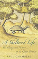 |
A Sheltered Life: The Unexpected
History of the Giant Tortoise.
Paul Chambers.
256 p�ginas, 2005, John Murray. |
|
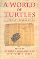 |
A World of Turtles: A Literary
Celebration. Gregory
McNamee, Luis Alberto Urrea (Editores).
149 p�ginas, 1997, Johnson Books. |
|
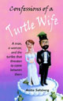 |
Confessions of a Turtle Wife.
Anita Salzberg.
220 p�ginas, 2001, Hats off Books. |
|
 |
Darwin's Tortoise: The Amazing
True Story of Harriet, the Worlds Oldest Living Creature.
Robin Stewart.
150 p�ginas, 2006, Black. |
|
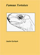 |
Famous Tortoises.
Justin Gerlach.
51 p�ginas, 1998, Justin Gerlach. |
|
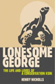 |
Lonesome George: The Life and
Loves of a Conservation Icon.
Henry Nicholls.
256 p�ginas, 2006, Palgrave
Macmillan. |
|
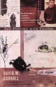 |
Self-Portrait with Turtles: A
Memoir. David M.
Carroll.
181 p�ginas, 2005, Mariner Books. |
|
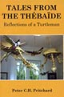 |
Tales from the Th�ba�de,
Reflections of a turtleman.
Peter C.H. Pritchard.
330 p�ginas, 2006, Krieger
Publishing Company. |
|
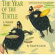 |
The Year of the Turtle: A Natural
History. David M.
Carroll
172 p�ginas, 1996, St Martins. |
|
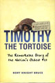 |
Timothy the Tortoise: The
Remarkable Story of the Nation's Oldest Pet.
Rory Knight Bruce.
224 p�ginas, 2004, Orion Books. |
|
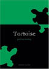 |
Tortoise.
Peter Young.
205 p�ginas, 2003, Reaktion Books,
Colecci�n "Animal" |
|
 |
|
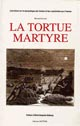 |
La Tortue Martyre.
Bernard Devaux.
230 p�ginas, 1998, Editions
Soptom. |
|
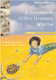 |
� la recherse d'Olive Hermann, la
tortue. Marie Droull�.
40 p�ginas, 2006, Tertium
Editions. |
 
|
|